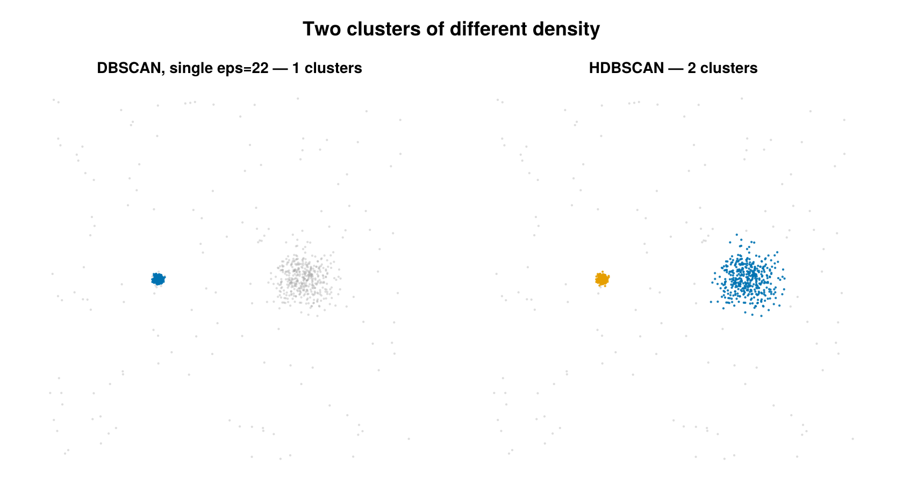

HDBSCAN
Hierarchical density-based clustering (Campello, Moulavi & Sander 2013) exposed as a cluster labeling backend through HDBSCANConfig. Unlike DBSCAN it needs no single global radius ε: it builds a hierarchy over mutual-reachability distance, condenses it by minimum cluster size, and extracts the most stable flat clusters — so clusters of differing local density can be recovered in one pass. The implementation is pure Julia (no external HDBSCAN library) built on NearestNeighbors.KDTree.

Two clusters of very different density. A single DBSCAN eps tuned for the dense cluster misses the diffuse one entirely (left); HDBSCAN's adaptive density recovers both (right).
Concept
DBSCAN draws clusters at one density level set by eps_nm: a clump that is dense in one region and loose in another forces a single compromise radius. HDBSCAN replaces that single cut with a hierarchy of cuts:
- Core distance $d_\text{core}(p)$ turns each point's local neighbor spacing into a density estimate — the distance to its $k$-th nearest neighbor (here $k =$
min_points). Sparse points have large core distances; dense points have small ones. - Mutual reachability distance $d_\text{mreach}(a,b)$ inflates the raw Euclidean distance between two points by their core distances, so the graph that links points is "smoothed" against low-density bridges and single-link chaining.
- A minimum spanning tree (MST) over $d_\text{mreach}$ gives a single-linkage hierarchy: a dendrogram parameterised by $\lambda = 1/d_\text{mreach}$, where high $\lambda$ means high density.
- The dendrogram is condensed using
min_cluster_size: only splits where both branches are large enough survive as real sub-clusters; smaller branches "fall out" as noise of the parent. The result is the condensed cluster tree. - Each candidate cluster gets a stability (persistence) score, and a flat partition is extracted by selecting the set of tree nodes that maximises total stability (excess of mass), rather than cutting the dendrogram at one height.
Prefer HDBSCAN over DBSCAN when clusters have varying density, when a good global eps_nm does not exist, or when you want the algorithm to decide how many clusters there are. The cost is more parameters with less direct physical meaning (counts, not nanometres) and a heavier compute path than DBSCAN.
How it works
The backend reproduces the Campello/Moulavi/Sander 2013 algorithm directly on the $d \times n$ coordinate matrix (microns; $d = 2$, or $d = 3$ when use_3d=true).
1. Core distance. Build a Euclidean KDTree and, for each point $p$, query its nearest neighbors. With $m =$ min_points (clamped to $n-1$), the core distance is the distance to the $m$-th neighbor, excluding $p$ itself:
\[d_\text{core}(p) \;=\; \bigl\lVert p - p_{(m)} \bigr\rVert_2, \qquad m = \texttt{min\_points}.\]
2. Mutual reachability. For an edge $(a,b)$,
\[d_\text{mreach}(a,b) \;=\; \max\!\bigl(d_\text{core}(a),\; d_\text{core}(b),\; \lVert a - b \rVert_2\bigr).\]
3. Minimum spanning tree. A full $d_\text{mreach}$ graph is $O(n^2)$, so the code builds a sparse $k'$-NN graph with $k' =$ knn_graph_k (clamped to $n-1$), weights each edge by $d_\text{mreach}$, and runs Kruskal's algorithm with union-find to get the MST. Because a $k'$-NN graph can be disconnected when clusters sit far apart, a bridge-repair step then queries the KD-tree with a progressively doubling $k$ (up to $n-1$) to find the cheapest mutual-reachability edge joining two components, adds those bridges, and repeats until the tree spans all $n$ points. Only a genuinely unbridgeable graph raises an error.
4. Single-linkage hierarchy. MST edges are merged in ascending weight; each merge is a dendrogram node at density level
\[\lambda \;=\; \frac{1}{d_\text{mreach}}\]
(coincident points, $d_\text{mreach}=0$, give $\lambda = \infty$).
5. Condense by min_cluster_size. Walking the dendrogram from the root, at each split with child sizes $n_L, n_R$:
- if $n_L \ge$
min_cluster_sizeand $n_R \ge$min_cluster_size, the parent dies and two child clusters are born at this $\lambda$; - if only one side is large enough, the small side falls out (its points become noise of the parent at this $\lambda$) and the large side continues as the same cluster;
- if neither side is large enough, the cluster dies and both branches' points are its stable members up to this $\lambda$.
6. Stability (persistence). Each cluster $C$ accumulates, over every fall-out event $e$, the density "depth" times the number of points $n_e$ that fell:
\[S(C) \;=\; \sum_{e \,\in\, \text{fall events of } C} \bigl(\lambda_e - \lambda_\text{birth}(C)\bigr)\, n_e .\]
7. Flat extraction. Two selection rules are available:
:eom(excess of mass, the default and canonical HDBSCAN rule): walk the condensed tree bottom-up; keep $C$ if $S(C) \ge \sum_{\text{children}} S(\text{best})$, otherwise propagate the children's selection upward. The root (the whole connected mass) is a candidate only whenallow_single_cluster=true.:leaf: select every leaf of the condensed tree (finer clusters, akin to DBSCAN at a locally varyingε).
Each point is finally assigned to its deepest selected ancestor cluster; points with no selected ancestor are labelled noise (id = 0).
Configuration
HDBSCANConfig <: AbstractClusterConfig. All knobs are integer counts or symbols — note there are no length parameters in nm or µm (the geometry is set entirely by min_points / min_cluster_size, in contrast to DBSCAN's eps_nm).
| field | default | unit | meaning |
|---|---|---|---|
min_points | 5 | neighbors (count) | $k$ for the core-distance: distance to the min_points-th nearest neighbor. Larger ⇒ more conservative (smoother density, fewer clusters). |
min_cluster_size | nothing → min_points | emitters (count) | minimum size of a cluster in the condensed tree. When nothing, falls back to min_points. Effective value must be ≥ 2. |
knn_graph_k | 30 | neighbors (count) | width $k'$ of the sparse $k'$-NN graph used as the MST scaffold. If a $k'$ leaves the graph disconnected the backend auto-bridges components (expanding $k$ up to $n-1$); larger $k'$ avoids that repair work. |
cluster_selection_method | :eom | — | :eom (excess of mass; canonical) or :leaf (all condensed-tree leaves). |
allow_single_cluster | false | — | when true, the root (whole connected mass) is an EOM candidate, so single-blob data returns one cluster instead of zero. Matches the Python hdbscan default. |
use_3d | false | — | cluster in $(x,y,z)$; requires 3D emitters (e.g. Emitter3DFit). |
per_dataset | true | — | cluster within each dataset index independently; (dataset, id) then identifies a cluster across a multi-dataset SMLD. |
remove_unclustered | false | — | drop noise emitters (id == 0) from the returned SMLD. |
Validation at dispatch entry: min_points ≥ 1, knn_graph_k ≥ 1, cluster_selection_method ∈ (:eom, :leaf), and the effective min_cluster_size ≥ 2 (otherwise an ArgumentError).
using SMLMClustering
# Default-ish run: density set by min_points, EOM extraction.
cfg = HDBSCANConfig(min_points = 10, min_cluster_size = 20, knn_graph_k = 50)
smld_out, info = cluster(smld, cfg)
println(info) # ClusterInfo(.../... clustered, K clusters, ...)
labels = [e.id for e in smld_out.emitters] # 0 = noise, 1..K
persistence = smld_out.metadata["hdbscan_cluster_persistence"] # one per cluster
birth_λ = smld_out.metadata["hdbscan_cluster_lambda_birth"] # one per cluster
# Finer leaf clusters, allow a single whole-data cluster, 3D:
cfg3 = HDBSCANConfig(min_points = 15, cluster_selection_method = :leaf,
allow_single_cluster = true, use_3d = true)
smld3, info3 = cluster(smld, cfg3)Output & interpretation
cluster(smld, ::HDBSCANConfig) follows the shared interface and returns (smld_out, info::ClusterInfo):
Labels. Cluster ids are written to
emitter.idon the deep-copied output SMLD:0= noise,1..K= clusters. Withper_dataset=trueids are local to each dataset, so(dataset, id)is the unique key. The input SMLD is never modified.ClusterInfocarriesn_locs_in,n_clustered,n_noise,n_clusters,cluster_sizes(lengthn_clusters; underper_datasetthe per-dataset sizes are concatenated in dataset order — see below),algorithm = :hdbscan, andelapsed_s.HDBSCAN-specific metadata on
smld_out.metadata:"hdbscan_cluster_persistence"::Vector{Float64}— per-cluster stability $S(C)$;"hdbscan_cluster_lambda_birth"::Vector{Float64}— per-cluster birth $\lambda$ (units µm⁻¹, the density level at which the cluster appeared).
Both are flat vectors of length
n_clustersin cluster-id order, concatenated across datasets inper_datasetorder — i.e. the firstn_clustersof dataset 1, then dataset 2, and so on, matchingcluster_sizes. Higher persistence ⇒ a cluster that survives over a wider density range and is the more trustworthy structure.
Notes & caveats
- 2D and 3D. Both are supported via
use_3d; 3D requires emitters with a:zproperty, otherwise coordinate extraction errors. - Counts, not lengths. All geometric behaviour comes from
min_pointsandmin_cluster_size— there is noeps_nm. The natural scale parameter is the density (core distance), set implicitly bymin_points. min_pointsvsmin_cluster_size.min_pointscontrols the density estimate (the $k$-th-NN core distance);min_cluster_sizecontrols how many points make a cluster in the condensed tree. They default to the same value but tune different things — raisemin_pointsto smooth density, raisemin_cluster_sizeto merge away small sub-clusters.knn_graph_kand connectivity. Too small a $k'$ triggers the bridge-repair path (correct but slower); the doubling search runs up to $k = n-1$, and only a truly unbridgeable graph raises"cannot bridge components". Raiseknn_graph_kfor well-separated multi-cluster data to skip repairs.- Empty / tiny groups. A group with
n = 0yields no clusters; a group with $n <$ effectivemin_cluster_sizeis returned entirely as noise (no error). - Halo trimming (
halo_trim_frac). Raw HDBSCAN* labels every point under a selected cluster's branch, which lets a diffuse cluster sweep in density-connected background far beyond its real extent. By default this backend trims that halo: a point that fell out of its cluster near the cluster's birth (weakly attached) is returned as noise, so a cluster's members track its physical extent — the radius where its density crosses the background level. Sethalo_trim_frac = 0for the raw, un-trimmed HDBSCAN* labels; raise it to trim more aggressively. - Coincident points. Duplicate coordinates give $d_\text{mreach} = 0$ and $\lambda = \infty$; these are handled (the merge level is treated as infinite density) rather than erroring, unlike the Voronoi backend's duplicate guard.
- EOM returns nothing on a single blob. With the default
:eomandallow_single_cluster=false, data that is one tight mass with no real internal split yields zero clusters; setallow_single_cluster=trueto recover the whole mass as one cluster. - Compute. Per group the cost is dominated by KD-tree neighbor queries plus the MST build (Kruskal over the $k'$-NN edge set); it scales moderately — heavier than DBSCAN, lighter than the $O(n^2)$ Hierarchical backend.
References
- R. J. G. B. Campello, D. Moulavi, J. Sander, "Density-Based Clustering Based on Hierarchical Density Estimates", PAKDD 2013, LNCS 7819, pp. 160–172.
- R. J. G. B. Campello, D. Moulavi, A. Zimek, J. Sander, "Hierarchical Density Estimates for Data Clustering, Visualization, and Outlier Detection", ACM Transactions on Knowledge Discovery from Data 10(1):5, 2015 — the journal extension formalising cluster stability / excess of mass.
- L. McInnes, J. Healy, S. Astels, "hdbscan: Hierarchical density based clustering", Journal of Open Source Software 2(11):205, 2017 — the reference HDBSCAN* /
:eomvs:leafselection andallow_single_clustersemantics this backend mirrors. - Nearest-neighbor queries use NearestNeighbors.jl (
KDTree, Euclidean metric).